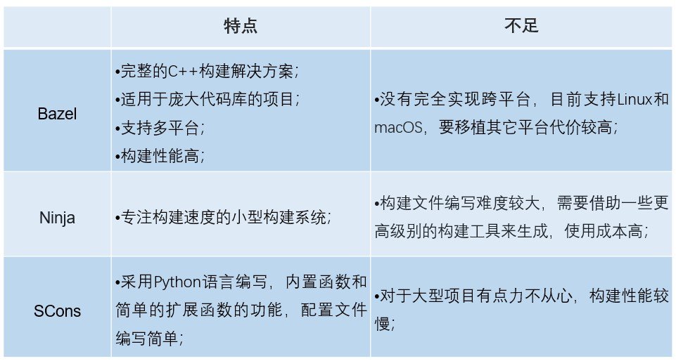
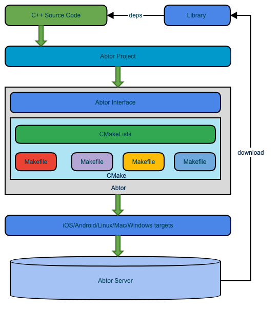
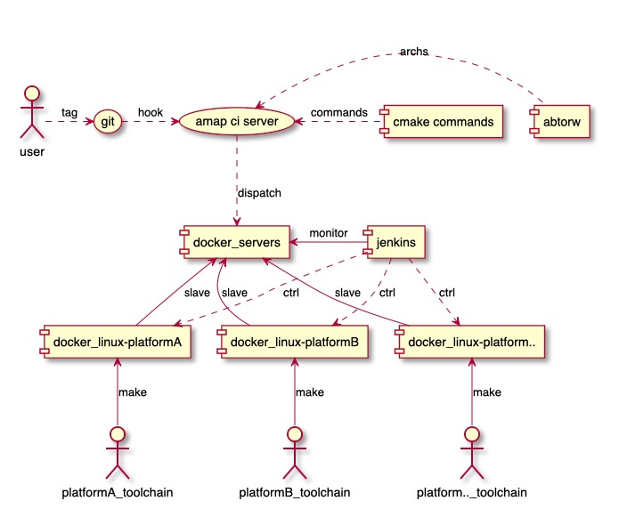
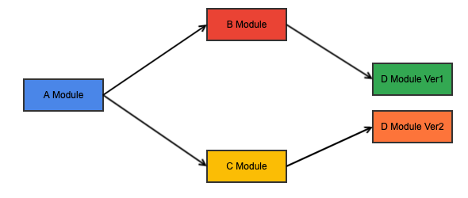
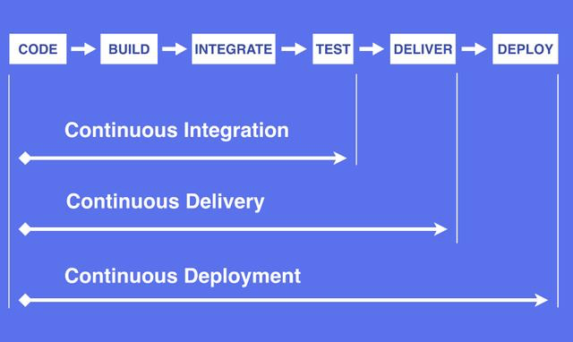
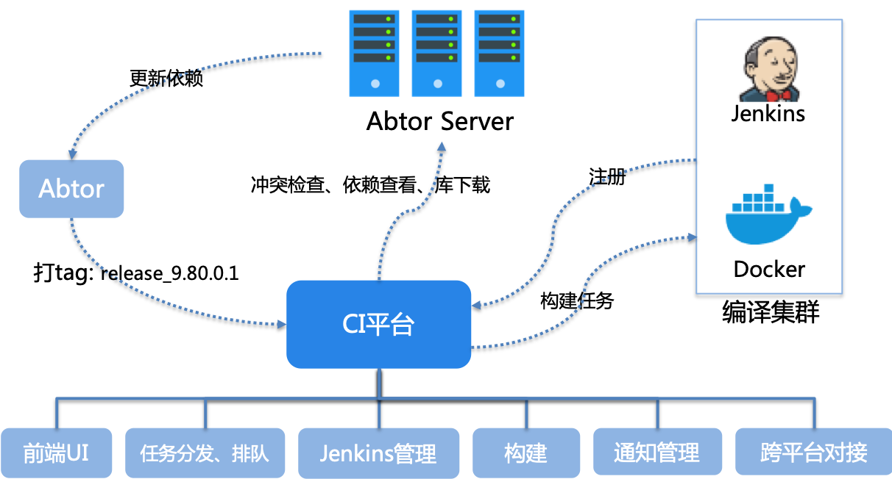
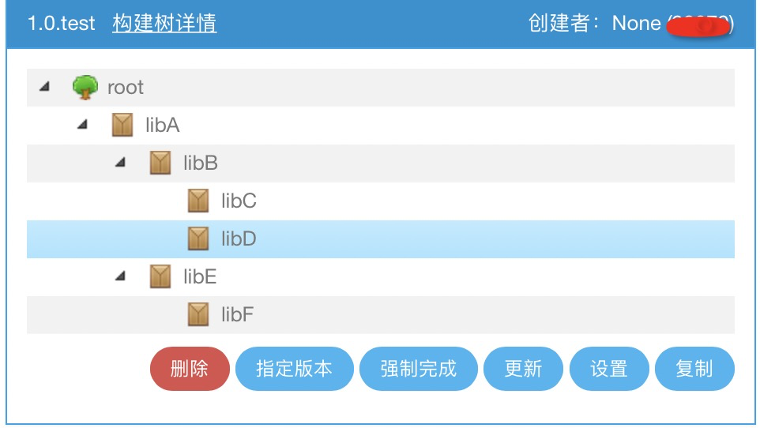

01 背景
由于导航应用中的地图渲染、导航等核心功能对性能要求很高，所以高德地图客户端中大量功能采用 C++ 实现。随着业务的飞速发展，仅地图引擎库就有40多个模块，工程配置极其复杂，原有的构建及持续集成技术已无法满足日益增长的需求变化。
除了以百万计的代码行数带来的复杂度外，高德地图客户端中的 C++ 引擎库工程（以下简称引擎库）的构建和持续集成还面临以下几个挑战：
此外，由于历史原因，引擎库中源码和依赖库混杂，都存放于 Git 仓库中，这样会带来两个问题：
上述的挑战和历史遗留问题严重阻碍了研发效能的提升。为此，我们对现有的构建及持续集成工具进行了深入的研究和分析，并结合自身的业务特性，最终发展出高德地图 C++ 本地构建工具 Abtor 和持续集成工具 Amap CI 。
02 本地构建
现有工具分析
C++ 是一门靠近底层的语言。不同的硬件、操作系统、编译器，再加上交叉编译，导致 C++ 构建的难度非常高。针对这些问题，C++ 社区涌现出许多优秀的构建工具，比如大名鼎鼎的 Make 和 CMake 。
Make，即 GNU Make ，于1988年发布，是一个用来执行 Makefile 的工具。Makefile 的基本语法包括目标、依赖和命令等。使用过程中，当某些文件变了，只有直接或者间接依赖这些文件的目标才需要重新构建，这样大大提升了编译速度。
Make 和 Makefile 的组合可以看作项目管理工具，但它们过于基础，在跨平台的使用方面有很高的门槛和较多的限制，此外大项目的构建还会遇到 Makefile 严重膨胀的问题。
CMake 产生于2000年，是一个跨平台的编译、测试以及打包工具。它将配置文件转化为 Makefile ，并运行 Make 命令将源码编译成可执行程序或库。CMake 属于 Make 系列，配置文件比 Makefile 具有可读性，支持跨平台构建，构建性能高。
但是 CMake 也有两项明显不足，一是配置文件的复杂度远高于其它现代语言，对于 CMake 语法初学者有一定的学习成本，二是与不同 IDE 的配合使用不够友好。
可以看出 Make 和 CMake 的抽象度还是比较低，从而对构建人员的要求过高。为了降低构建成本，C++ 社区又出现了一些新的 C++ 构建工具，现在使用较广泛的包括 Google 的 Bazel 和 Ninja ，以及 SCons 。这些工具的特点和不足如下：

经过上述对现有 C++ 构建工具的研究和分析，可以得出每个工具既有所长又有不足的结论。再考虑到高德地图引擎库工程面临的挑战和历史遗留问题，我们发现以上工具没有一个可以完美契合业务需求，且改造成本非常高，所以我们决定基于 CMake 自建 C++ 本地构建工具，即现在引擎库工程使用的 Abtor 。
Abtor
首先，我们需要解释一个问题，即 Abtor 是什么？
Abtor 是一个 C++ 跨平台构建工具。Abtor 采用 Python 编写构建脚本，生成 CMake 配置文件，并通过内置 CMake 组件生成构建文件，最终产出可执行程序或库。它抽象出构建描述，使得复杂的编译器和连接器对开发者透明；它提供强大的内置功能，从而有效的降低开发者编写构建脚本的难度。
其次，我们需要阐述一个问题，即Abtor的构建流程是什么？

如上图所示，Abtor 构建的整个流程为：
除此之外，还增加了控制访问发布库权限的功能，用于保证发布库的安全。
最后，我们需要探讨一个问题，即Abtor解决了什么？
在开篇背景中，我们提到阻碍研发效能的一些挑战和问题，这就是 Abtor 需要解决的，所以 Abtor 具备以下特点：
从上述特点可看到，Abtor 有效地解决了已有的构建工具在高德业务中面临的痛点。但是冰冻三尺，非一日之寒，Abtor 也是在不断地完善中，下面重点介绍一下 Abtor 发展过程中遇到的三个问题。
工程配置一致化
在日常开发过程中，工程项目的调试工作尤为重要。高德地图客户端中的 C++ 引擎库工程的开发人员涉及几个部门和诸多小组。这些组擅长的技术栈，使用的平台和习惯的开发工具都大为不同。如果针对每一个平台都单独建立相应的工程配置，那么工作量及后续维护成本可想而知。
基于以上原因，Abtor 内置与 IDE 结合的功能，即开发者可以通过一套配置并结合 Abtor 命令一键生成工程配置，实现在不同平台的工程配置的一致化。工程配置一致化为引擎库开发带来以下几个收益：
复杂车机环境的构建
作为高德地图一条非常重要的业务线，车机面对的构建环境复杂多变，厂商往往会自行定制工具链。如果每接入一个设备，所有工程项目都需要修改配置文件，那么这个成本还是非常高的。为了解决这个问题，Abtor 提供两种做法：
除此之外，我们对所有的车机环境进行了 Docker 化处理，并通过 Docker 控制中心统一管理车机 Docker 环境的上线与下线，再利用上述 Abtor 的内置工具链配置功能内置车机构建参数，实现开发者无感知的环境切换等操作，有效地解决了复杂车机环境的构建问题。
基于 Docker 的车机构建主要步骤如下：
基于Docker的车机构建关系图如下:

依赖管理
依赖问题是所有构建工具都避免不了的问题，在这其中，菱形依赖问题尤为常见。如下图所示，假设 A 依赖了 B 和 C ，B 和 C 又分别依赖了不同版本的 D，而 D 之间只存在很小的差异，这是可以编译通过的，但最终在运行时可能会出现意想不到的问题。
如果没有一种机制来检测，菱形依赖是很难被发现，而产生的后果又可能是非常严重的，比如导致线上出现大面积的崩溃等。所以依赖问题的分析与解决非常重要。

当下，市面上 Java 有比较成熟的依赖管理解决方案，如 Maven 等，但 C++ 并没有。为此 Abtor 专门建立依赖管理的机制来确保编译的正确性。
Abtor 的依赖管理是怎么做的呢？这里提供一个思路供大家参考：
根据上述思路，我们保证了库依赖的一致性，避免了菱形依赖问题。另外，如果某个库被其它库所依赖且有更新，那么依赖它的库也应当随之构建，以确保依赖的一致性。这种对依赖构建的触发更新我们放到 Amap CI 上实现，在第三节会进行详细介绍。
工程实践
在介绍完 Abtor 的一些基本原理后，我们将介绍 Abtor 在日常开发中是如何使用的。
下图是 Abtor 工程项目的目录结构，其中有两类文件是开发者需要关心的，一类是源文件目录（src），一类是 Abtor 核心配置文件（abtor.proj）。
abtor_demo
├── ABTOR
│ └── wrapper
│ ├── abtor-wrapper.properties # 配置文件,可指定Abtor版本信息
│ └── abtor-wrapper.py # 下载Abtor版本并调用Abtor入口函数
├── abtor.proj # Abtor核心配置文件
├── abtorw # Linux/Mac下的初始执行脚本
├── abtorw.bat # Windows下的初始执行脚本
└── src
└── main.c # 要编译的源文件
源文件目录的组织形式与 Make 系列构建工具没有太大区别。下面重点看一下Abtor核心配置文件：
#!/usr/bin/python
# -*- coding: UTF-8 -*-
# 以下内容为python语法
# 指定编译的源码
header_dirs_list = [abtor_path("include")] # 依赖的头文件目录
binary_src_list = [abtor_path("src/main.c")] # 源码
cflags = " -std=c99 -W -Wall "
cxxflags = " -W -Wall "
# 指定编译二进制
abtor_ccxx_binary(
name = 'demo',
c_flags = cflags,
cxx_flags = cxxflags,
deps = ["add:1.0.0.0"], # 指定依赖的库信息
include_dirs = header_dirs_list;
srcs = binary_src_list
)从上图可以看出，Abtor核心配置文件具有以下几个特点：
通过以上的对源文件目录组织及 Abtor 核心配置文件编写，我们就完成了项目的Abtor配置化，接着可以通过Abtor内置的命令构建、发布或直接生成项目工程。我们相信，即使开发者不是很精通构建原理，依然可以无障碍地使用Abtor进行构建与发布。
03 持续集成
面临的问题
如下图所示，整个开发工作流程可分为几个阶段：编码->构建->集成->测试->交付->部署。在使用Abtor解决本地构建遇到的一系列挑战与问题后，我们开始将目光转移到了整个持续集成阶段。

持续集成是指软件个人研发的部分向软件整体部分交付，频繁进行集成以便更快地发现其中的错误。它源自极限编程（XP），是 XP最初的12种实践之一。对于引擎库来说，持续集成方案应该具备一次性批量构建不同平台不同架构目标文件的能力，同时也应当具备运维管理和消息管理的能力等。
最初高德引擎库使用 Jenkins 进行持续集成。因为引擎库开发采用在 Git 仓库上拉取分支的方式进行版本管理，所以每次版本迭代都需要手动建立 Jenkins Job，修改相应脚本，另外还需要额外搭建一个依赖库关系的 Jenkins Job 做联动编译。
假设有100个项目，那么每个版本迭代都需要手动创建101个 Jenkins Job 。每次版本迭代都重复类似的操作，中间需要大量的协调工作，随着迭代版本越来越多，这些 Jenkins Job 变得不可维护。这是 Jenkins 持续集成方案在高德引擎库开发过程中遇到的非常严重的问题。
基于上述原因，我们迫切得需要这样一个持续集成系统：开发者不用维护Jenkins，不需要部署构建环境，可以不了解构建细节，只需要通过某个触发事件就能够构建出所有平台的目标文件。于是我们决定自建持续集成平台，即 Amap CI。
Amap CI
Amap CI 平台使用Gitlab的Git Webhook实现持续集成。其中，Gitlab 接收开发者的 tag push 事件，回调 CI平台的后台服务，然后后台服务根据构建机器的运行情况进行任务的分发。当构建任务较多时，CI平台会等待直到有构建资源才进行任务的再分配。
Amap CI 平台由任务管理、Jenkins管理、构建管理、通知管理、网页前端展示等几部分组成，整体架构图如下：

通过 Amap CI 平台，我们达到了以下几个目的：
在上述目的中，对 Amap CI 平台最重要的是自动化，下面我们重点介绍一下自动化中的整树联动编译。

整树联动编译
在第二部分中我们提到了一个问题，即如果某个库被其它库所依赖且有更新，那么依赖它的库也应当随之构建，以确保依赖的一致性，这是构建自动化的关键点之一。Amap CI 采用整树联动编译的方案来解决这个问题。
开发者在CI平台上建立对应的版本构建树，构建树中罗列了各个库之间的构建顺序，如下图所示。CI平台会根据这棵构建树进行构建，被依赖的库优先构建，完成后再自动触发其上级的库构建，以此类推，最终形成一棵多叉树。在这棵多叉树上，从叶子节点开始按层级顺序逐级并发构建对应的库，这就是整树联动编译。
根据上述思路，我们保证了持续集成时的依赖一致性。开发者只需关心自己负责的库，打个 tag ，即可触发生成所有依赖该库的库，从而避免了依赖不一致的问题。
工程实践
在介绍完 Amap CI 的一些基本原理后，我们将介绍日常开发中应该如何使用Amap CI。
一个新的工程项目在集成到 Amap CI 平台时，首先需要将CI平台的 web hook 网址增加到 Gitlab 的配置中，然后编写配置文件 CI_CONFIG.json ，至此一个新的项目已集成完成，非常简单。下面我们重点介绍一下 CI_CONFIG.json 。
CI_CONFIG.json 是核心配置文件，一次编写，无需再修改。它的结构如下：
CI_CONFIG.json DEMO:(json)
{
"mail":"name@alibaba-inc.com", # 邮件通知
"arch":"Android,iOS,Mac,Ubuntu64,Windows", # 构建的平台
"build_vars":"-v -V", # 构建参数
"modules":{ # 构建的模块列表
"amap":{ # 模块名为amap
"features":[ # 功能列表
{
"name":"feature1", # 设置功能名为feature1
"macro":"-DFEATURE_DEMO1=True" # 宏控：FEATURE_DEMO1
},
{
"name":"feature2", # 设置功能名为feature2
"macro":"-DFEATURE_DEMO2=True" # 宏控：FEATURE_DEMO2
}
]
},
"auto":{ # 模块名为auto
"features":[ # 功能列表
{
"name":"feature1", # 设置功能名为feature1
"macro":"-DFEATURE_DEMO1=True" # 宏控：FEATURE_DEMO1
},
{
"name":"feature3", # 设置功能名为feature3
"macro":"-DFEATURE_DEMO3=True" # 宏控：FEATURE_DEMO3
}
]
}
}
}
Amap CI 构建时读取上述文件，解析不同项目中配置的宏，并通过参数传递给 Abtor ，另一方面开发者在代码中利用这些宏进行代码隔离，构建时会根据这些宏选择对应的源码进行编译，从而支持多条业务线不同的需求，达到代码层面的最大复用。
目前 Amap CI 接入的项目数有几百个，编译的次数达到几十万次级别，同时在构建性能和构建成功率方面相比之前都有了大幅度的提高，现在仍旧不断有新的项目接入到构建平台上。可以说 Amap CI 平台是高德地图客户端 C++ 工程快速迭代开发的坚实保障。
04 未来展望
从2016年年中调研现有构建工具算起，到现在三年有余。三年很长，足以让我们将构想变成现实，足以让我们不断完善 Abtor ，足以让我们发展出 Amap CI 。三年又很短，对于一个系统开发生命周期而言，这仅仅是萌芽阶段，我们的征途才刚刚开始。
关于未来，我们的规划是向开发闭环方向发展，即打通编码、构建、集成、测试、交付和部署等各个环节中的链路，解决业务开发闭环的问题，实现整个开发流程自动化，进一步把开发者从繁琐的流程中解放出来，使得这些人员有精力去做更有价值的事情。